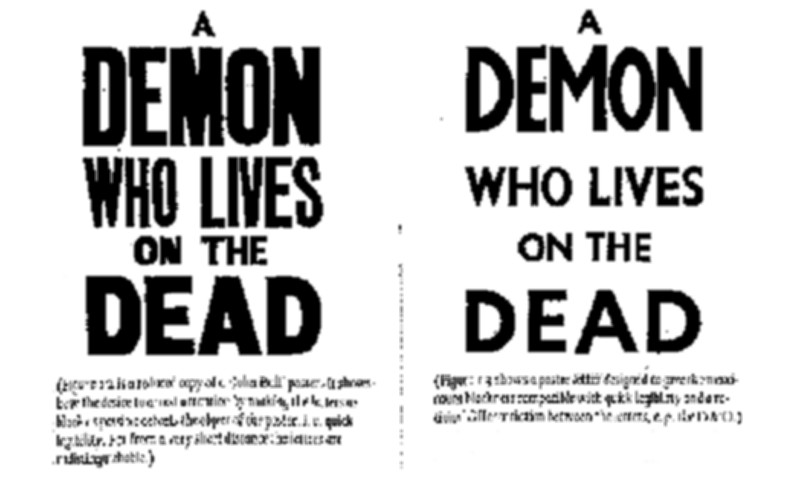
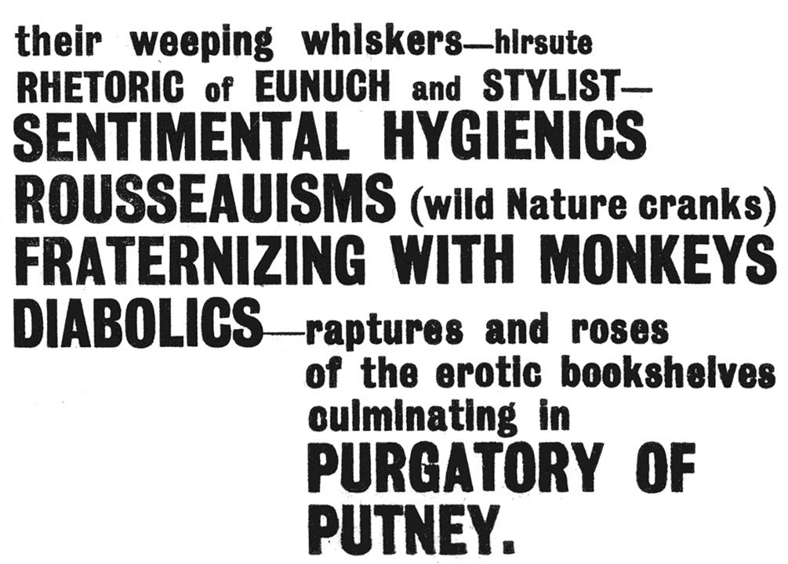
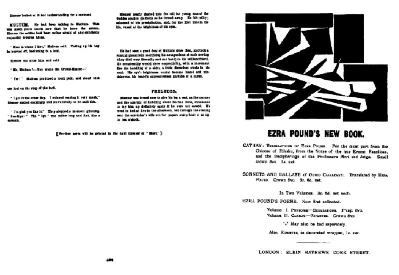

Blast: Crowd Master and Crowd Medium
bank holiday 1914
The newspapers had brought the maffickers onto the streets back in 1900, and as news spread of the ultimatum delivered by the British government to Germany on 4 August 1914, a new crowd gathered in London. The journalists revelled in it. Trafalgar Square to Parliament Square was a solid mass of people.
The plinth of the Nelson Column, the windows of the Government offices, and even the gilded splendour of the new Victoria Memorial served as grandstands for the demonstrators
; white marble was black with people.
As Big Ben struck midnight, and the new war began, a vast cheer burst out and echoed and re-echoed for nearly 20 minutes.
1
Far away, in a Berwickshire country house, Wyndham Lewis had been recuperating. He’d had a venereal infection; Mary Borden Turner, American millionairess, had taken him in. She was having a house-party, an exclusive affair, and Ford Madox Ford, Violet Hunt and E.M. Forster had been invited.2 We sat on the lawns in the sunlight and people read aloud,
remembered Ford, —which I like very much.
Ford read from his contribution to Blast, The Saddest Story, which would eventually become The Good Soldier, and Mary Borden read from the serialization of the Portrait of the Artist as a Young Man.3 As dark and historical crowds gather, Lewis and his companions enjoy the calm before the storm
: a charmed occasion, a last, magical Edwardian pause before the crash of the war.
4
Removed from the life of London’s gathering crowds, these writers on holiday
symbolise a more general removal of art from mass-life—or a myth of removal?—which has obsessed recent critics of modernism. Wyndham Lewis’s case has been particularly controversial: at one extreme, when skim-read by John Carey, he emerges as a self-deluding, Schicklgruberish madman, whose fear of women led to an obsession with his own personal selection of hates, which for him characterized democratic society.
5 Revisionists, however, have seen Lewis’s art as trafficking between high culture and popular entertainment
; as a phenomenon in the public world of newspapers, cabaret, decor and fancy dress.
6 His prose heralds a new satire-collage
—a form which in some way worked to meet the challenge
of the new technological and consumer culture.7 At stake is the characterization of modernism
itself. Is it a monolithic, antidemocratic institution, or can modernist art and popular culture (as Jeffrey Weiss suggests) be appreciated as part of a single train of thought
?8 Does it sit reading in the garden, or can it also function out in the street?
An influential way of approaching this question of a great divide
between mass culture and high
culture, has been to draw a distinction between modernist
practice—which seeks to preserve the autonomy of art, emphasizing the formal qualities of the artwork, and spurning the inferior mass-culture—and the avant-garde, which is art’s self-criticism, attacking its institutions and reintegrating it with the activities of life.9 Lewis, according to Andreas Huyssen, falls on the modernist side:
The powerful masculinist mystique which is explicit in modernists such as…Wyndham Lewis…has to be somehow related to the persistent gendering of mass culture as feminine and inferior—even if, as a result, the heroism of the moderns won’t look quite so heroic any more. The autonomy of the modernist art work, after all, is always the result of a resistance, [and] an abstention…—resistance to the seductive lure of mass culture, [and] abstention from the pleasure of trying to please a larger audience….10
Certainly, in the texts which I shall be focussing on, mass culture is feminine; the man in the crowd experiences a sensation of marriage,
losing his independence.11 And the eponymous hero of Lewis’s first novel, Tarr, seems obsessed with this autonomy of the modernist art work,
preferring the artist to be free, and the crowd not to be
; he argues that artists
life is art’s rival and vice versa
—ideas which inform the aesthetic of his painting, which he describes as ascetic rather than sensuous, and divorced from immediate life.
12
But these long lectures on Art, Life and the Crowd, that Lewis’s characters are often so punctilious about delivering, don’t necessarily have to be privileged as the idea
behind the work. For a start, Tarr is very drunk, or highly emotional, when most of the speechifying occurs; more significantly, the nihilistic ambiguities of the narrative, and baroque complexities of the language undermine the claims of Tarr’s straightforward explaining.
The reader’s understanding of Kriesler’s motivations, for example, is likely to be much richer (although perhaps more confused) than Tarr’s drunken analysis of him as a man who wanted to get out of Art back into Life again,
interesting though it is.13
A personal theory of the crowd
can easily be delineated from Lewis’s essays, and from some of the essayistic things that his characters say: it’s been done several times, most recently by Paul Edwards.14 In the short play, The Ideal Giant,
John Porter Kemp (following Le Bon’s law of the mental unity of crowds,
which states that individuals in a crowd situation form a collective mind,
a single being
)15 argues that a hundred men is a giant
—and that, like a giant, the crowd is always rather lymphatic and inclined to be weak intellectually.
16 The Artist, however—along with the heroic, revolutionary crowd—is an Ideal Giant or Many.
He incorporates the assaults,
the energies or voices of Mass Life into his work, while maintaining his Egoistic integrity: Art is never at its best without the assaults of Egotism and of Life.
In Blast, Lewis makes a similar appeal to the group-mind; the artist draws on it, but doesn’t necessarily become a part of it: we need the unconsciousness of humanity—their stupidity, animalism, and dreams
.17 Even Tarr concedes that in the Latin countries
(although not in England and Germany), the best things of the earth are in everybody’s mouth and nerves. The artist has to go and find them in the crowd.
18
But just following these abstract, polemical imperatives won’t lead very far. Ideas about what Art should
do can become tedious: the relations between Art, Life and the Crowd are, I believe, best demonstrated in the textures of Lewis’s writing itself. I shall attempt, in reading Lewis’s , to demonstrate what his art takes from the Crowd, and how it channels the unconsciousness of humanity.
the crowd-master
texts
Paul Peppis has convincingly argued that we should read the War Number of Blast in the context of contemporary patriotic discourse, bringing out the extent to which its percieved failings—its lack of punch when compared to the first issue—are due to Lewis and his contributors’ attempts to support the war effort. Lewis’s contribution, he argues, should be
understood as a work that elucidates the conflicted responses of Lewis and his comrades to the huge crowds that rallied to support the British cause in late July and early August 1914, and the attendant claims of wartime patriotism: fictionalizing Vorticism’s initial response to the stirrings of war, the story stages a stylistic and thematic competition between mass patriotism and avant-garde critique, corporate action and intellectual elitism, conformity to state narratives and formal experiment. 19
His analysis is cogent, but I feel that he accepts to easily the distinction that has always been drawn between the two issues of Blast: the first, overly-boisterous avant-garde issue, with its boisterous typography, and the second, less formally interesting issue.
In the following pages, I want to examine the crowd
elements of The Crowd Master
while paying close attention to its formal literary qualities—its attention to printed matter, to presentation—in an attempt to show how the crowd might be approached as a formal rather than a straightforwardly social entitly.
The Crowd Master
, published in the Blast War Number in late July, 1915, a year after the visit to Berwickshire, was to have been the first part of a long story; Blast 3 never materialised, so it is left hanging with the unfulfilled promise of further parts.
20 It begins with a threatening, headline-style depiction of the London war-crowd, of July 1914, as it serpentines every night…all over the town, in tropic degustation of news,
while the evening press bangs out the ULTIMATUM!
(B2, 94). Meanwhile, Thomas Blenner is staying in Scotland with friends, recovering after a fall from a horse. He follows the international situation in the popular newspapers; as they begin to sell out, Blenner felt the need of the great Crowd
(B2, 95). He takes a train to London, studying the faces and characters of naval reservists who’ve received their mobilisation orders. In London, Blenner recognises a man in the crowd: Brown Bryan Multum—his surname marks him out as somebody who belongs in the multitude. Later, at home, looking at himself in the mirror, Blenner is reminded of Multum, who, it gradually becomes clear, is an American writer, author of an intellectual self-help book and ingenious tirade against hair
called THE CROWD MASTER
(outsize, upper-case type features extensively in The Crowd Master
, as it does elsewhere in Blast; popular-press typography, as we shall see, is a vital resource in Lewis’s attempt to transcribe the crowd mind). Blenner remembers reading Multum’s book, and his first meeting with the author in a railway carriage.
In 1937, Lewis revisited the Blast period in his autobiography, Blasting and Bombardiering. After describing the visit to Berwickshire—Ford speculating about whether there would be a war, then going off to play golf; reading the first yard-high newspaper headlines, announcing the first ULTIMATUM
21—Lewis suddenly announces,
I will hand over the controls to Cantleman. For a chapter or two I will abandon my narrative in the first person singular. You shall see these things as I saw them, yes, but out of the eyes of a mask marked
Cantleman. When he stops speaking (which will be after the declaration of war, in London) I shall take up the narrative again.22
Cantleman reads the newspapers, and, yearning for the crowd, travels down to London, pretty much as Blenner had before him. The threatening descriptions of the War-Crowds from the beginning of the Blast story, making serpentine, necrophile and aquatic analogies, come later in the Blasting and Bombardiering version: they are presented as Cantleman’s first impressions of London. Once he has arrived, we are suddenly told that Cantleman’s crowd-experiments began at once
.23 And the rest of the section is taken up with a description of these crowd-experiments
: Cantleman becomes a medium, attempting to persuade the crowd to enter him, and to speak through him, assiduously taking ridiculous, scientific notes. The experiments culminate on the plinth of Nelson’s Column, the focus of British Crowd-life in times of war, when Cantleman achieves a vision of Nelson’s mistress, Lady Hamilton, in tight fitted bathing drawers,
and with scented limbs
.24
Lewis claims that Cantleman was his colleague of
; his account of the London crowd has supposedly been Blast
dug up
from the Blast War Number, registering with surprising sharpness first hand impressions of the opening stages of a great war
.25 Lewis lies: Cantleman didn’t appear in Blast—but how many of his readers in 1937 would have had a copy to hand, to check against?
A man with the same name appeared in the story Cantleman’s Spring Mate
(first published in the Little Review in 1917, and suppressed for alleged obscenity, it was later included in the revised edition of Blasting and Bombardiering).26 The Cantleman of the War-Crowds sections of Blasting and Bombardiering, though, seems to be a conflation of Blenner and Multum: he first turns up in the manuscript revision of the Blast story, known as Cantelman Crowd-Master
(his name is spelt inconsistently as either Cantelman
or Cantleman
).
These texts are so important to my argument below that I have been compelled to prepare a reading text, included as an appendix at the end of my thesis. They are important, I would argue, not only to my thesis—they give us the clearest view available of the crowd art that was conceived, experimented with, and eventually abandoned in early twentieth-century London.
On first reading the Blast story, shortly after rereading Blasting and Bombardiering, I found myself recognising and skipping over large sections, which seemed barely to have been reworked. The two texts, in their overall shapes, seem similar enough. Yet the significant changes that Lewis did make—the conflation of Blenner and Multum as Cantleman (which, obviously, necessitates the removal of the long flashback where Blenner and Multum meet) and the transposition of the opening crowd-scenes to the end section, where they lead into a new section describing Cantleman’s crowd-experiments
—transform the text completely. The Blast story, I will argue, represents the opening chapter of an avant-garde novel of education,
where a young man, Blenner (a twentieth-century Julien Sorel or Eugene Rastignac), goes out into the world, learning how to read it, how to negotiate it. The crowd, in this context, is a readable, understandable, negotiable phenomenon: mastery,
or at least a kind of understanding of the crowd, is attainable. But, as I will argue in chapter three below, the Crowd-Master
sections of Blasting and Bombardiering are a completely different kind of text—they are satirical: they appropriate, exaggerate and eventually undermine the science of crowd behaviour. Cantleman can’t master
anything; all he can do is jump between scientific discourses, whose bottoms, like the ideological discourses of The Revenge for Love, are always false.
crowds, blast, and print culture
Lewis’s blunt claim that the first number of Blast was not unlike a telephone book
27 in its general appearance seems at odds with the sensation of shock
described by more recent readers, the sense of Blast as displaying a hardness, violence and…worship of energy.
28 But the blocky, commercial telephone book
styling, with free-floating lists of names and numbered clauses printed on heavy brown paper, signals Blast’s connectedness to the channels of mass communication. Like the telegraphic images
of Marinetti’s parole in libertà,29 this is a modern art whose energies are transmitted and intensified through the overhead wire and the Linotype machine. Perloff suggests that the noisy, overbold manifesto at the beginning of the first number, recalls the advertising poster or billboard rather than the page to be consecutively read from top to bottom and from left to right.
30
The heavy monotone Grotesque in which Blast’s headings and manifestoes are set, is a direct descendent of the earliest sans-serif typefaces, cut by Thorowgood in the 1830s.31 The explosion in such peculiar fancy jobbing types
32 towards the end of the nineteenth century represented a kind of typographic arms-race. More and more arresting type-forms were needed to fulfil the requirements of competing advertisers, whose new, more visually striking adverts shouted against one another for the attention of consumers.33 Newspapers used bigger and heavier headline styles, and more flamboyant banners and splashes, in an attempt to suggest that their news was more sensational than anyone else’s. Like the dreadnought-race, these headline-contests reached a climax in 1914: Heinrich Straumann, a German grammarian studying the English press, wrote that the War was the great opportunity of the journalist to cultivate at home that atmosphere of numberless sensations which, in spite of the lack of paper, raised the psychological function of the headline to an importance never before obtained. Once this height was reached reduction became practically impossible.
34.

Eric Gill (whose celebrated Monotype Sans would go some way towards decommissioning sans-serif typefaces from this shouting match), in his Essay on Typography, discusses a poster for John Bull magazine, an extreme example of the overboisterousness which afflicted the press early in the century (plate 3). Blast, scattering its words across the page, appears even busier than the John Bull poster, but there is an obvious similarity of style (plate 4); a willingness to use the same commercial poster letters that were used to shout buy me
to the crowd—despite the fact that Lewis, in Blast, was attempting to kill John Bull with Art
.35 Gill complained that the business of poster letters, has not yet been extricated from the degradations imposed upon it by insubordinate commercialism. Mere weight and heaviness of letter ceases to be effective in assisting the comprehension of the reader when every poster plays the same shouting game.
36

But for Lewis’s Crowd-Master,
I shall argue, comprehension
means understanding the rules of this shouting game: a game which, in July 1914, is intricately tied in with the deadly seriousness of the war. The strategies of commercialism are not in themselves subordinate; indeed, Lewis appropriates them to advertise his avant-garde project. The story we shall be looking at is full of newspaper headlines; the newspapers, it is explicitly stated, allow themselves almost BLAST type already
(B2, 94). Blenner’s bright astonished eyes
are caught by the lettering on advertising posters (B2, 99); the papers fill him with surges of Crowd-energy. All of this upper-case shouting, though (like Marinetti’s shouting, which Lewis claims prepared him for the thumping of the Big Berthas on the Western Front; B&B, 33), has a different end—and of course, a different intellectual context—to the usual shout in the street. Lewis is attempting to teach the crowd an avant-garde reading strategy; a self-aware approach to the dangerous energies of mass communication: To be of the Crowd and individually conscious
(B2, 99)—not subordinate to the crowd-voices of the Mails and Expresses, the loudest shouters of the lot
(B&B, 66)—that is the special privilege
of the Crowd-Master.
The press-poster (of which Gill’s John Bull poster is an extreme representative) simultaneously advertises news and newspapers: the hot story is displayed in large letters, at the point of sale, to entice prospective readers. Thomas Blenner, going to town in the The Crowd Master
to get the latest papers, might have expected to see press-posters advertising the worsening international situation. What he in fact finds, is rather different:
The
Northern Dispatchposter was the first he saw, violet on white ground, large letters:MORPETH OLYMPIAD
RECORD CROWDWonderful Crowds, gathering at Olympiads! What is the War to you? It is you that make both the wars and the Olympiads. When War knocks at the door, why should you hurry? You are busy with an Olympiad! So for a day War must wait. Amazing English Crowds!
This crude violet lettering distillation of 1905 to 1915: Suffragism. H. G. Wells. Morpeth Olympiads. (B2, 95)
There seem to be three distinct levels
of voice here. First, we have the poster-copy, incorporated into the text pretty much as it would have appeared to Blenner. The visual equivalence between the bold capitals of the commercial, ephemeral press-poster (with its crude violet lettering
; violet on white ground, large letters
) and the bold capitals which define the Blast house-style is difficult to ignore: the Morpeth Olympiad poster even uses a bright, shocking colour, similar to the puce
or magenta cover
of Blast’s first issue. The poster speaks with a crude, mechanical voice: it doesn’t tell us what a Morpeth Olympiad is, or why the Crowd are there. It advertises the idea of loud newspapers; its bare technology represents the stripped-down apotheosis of Crowd-communication.
Violet, we are of course reminded, is the colour of the suffragette crowds—they have already been evoked, by way of a self-consciously dramatic Suffragette analogy
in the story’s opening section (B2, 94), as an extreme form of Crowd.37 The textuality of the Crowd, its reducibility to simple signs or colours, is a recurrent theme in all of the Crowd Master
texts. In the Blast story, the Crowd’s peculiar noise—a glottal, illiterate AR
—has already been represented as a fragment of text, which the narrator can play around with, reading out its hidden significance: For days now wherever you are you hear a sound like a very harsh perpetual voice of a shell. If you put W before it, it always makes WAR!
(B2, 95).
A second level of voice seems to describe the effect that the poster-lettering or Blast type
of the morpeth olympiad poster has on a less imaginative kind of reader—or, rather, the kind of hysterical reverie which it seems to induce in the field of the text. With its gratuitous rhymes (when War knocks at the door
) and alliteration (War must wait
), and its pattern of rhetorical questions and ironic exclamations, the short section reads like an exaggerated journalese, spontaneously generated from the headline. Has it, like the poster itself, issued from some imaginary ephemeral printing press? Perhaps it’s an ironic parody of the gushing, war-themed adverts that were so popular at the time of Blast 2: THE BRITISH EMPIRE the land of beauty virtue valour truth. Oh! who would not fight for such a land! follow the drum. In Sad Times, or Glad Times, and All Times, take ENO’S
38FRUIT SALT.
Such adverts, of course, anticipate the kind of effect that a powerful patriotic image might induce in a reader, at a time of national hysteria. Le Bon had suggested that the power of words is bound up with the images they evoke, and is quite independent of their real significance.
39 Newspapers have long been wise to the power of the headline to evoke emotions: analysing the Daily Mail’s headline to a story about a disgraced financier, Heinrich Straumann notes that it consciously underlines the emotional aspects of the affair. The news of the shock which Lord X.’s sentence produced in the city is calculated to produce a similar resonance among its readers.
40 The words record crowd
on the Morpeth Olympiad poster, seem to set somebody—some individual who has entered Le Bon’s crowd-mood
(Blenner, pehaps?)—resonating, flooding their mind with patriotic images. Of course, there is an ironical mismatch between the provincial insignificance of the poster, and the grand images which it is supposed to represent. But such is the nature of the Crowd. Having become Crowd in the house,
excited by the War’s gay Carnival of fear,
the country house guests later stick the Morpeth Olympiad poster up in the hall, as an adequate expression of the great Nation to which they belonged
(B2, 95).
The third voice is oblivious to this Crowd-hysteria, and immune to the hypnotic impact of crude display-types. It’s a voice which coldly analyses what it reads, breaking down the poster’s distillation
into its constituent elements. It draws the reader to see the suffragist
significance of the colour violet, and coldly alludes to H. G. Wells’ romances of modern mass-culture, of technology and Tono-Bungay (or Eno’s-Fruit-Salt-style) cures; a northern neo-pagan sports event is idiosyncratically chosen as symptomatic of years 1905 to 1915. 1905 to 1915? For Blenner, looking at the poster, it’s still July 1914, so this clearly can’t be his reaction (although the crowd-paean possibly is). The style, however, is familiar. Its telegraphic distillation of a decade, Suffragism. H. G. Wells. Morpeth Olympiads,
recalls the loud, brief injunctions against the Victorians in Blast 1: BLAST years 1837 to 1900
(B1, 18), or the lists of the Blasted, Codliver Oil St. Loe Strachey Lyceum Club
(B1, 21).
The editor of Blast, looking back in his story to mid-1914, from the vantage-point of mid-1915, is demanding a new kind of reading. Assembling a disparate selection of textual fragments, torn from everyday life, he suggests that, in combination, they have a certain significance. He demonstrates how, by a simple act of addition, the ARs
of the crowd’s harsh perpetual voice
can make WAR.
What is Codliver Oil doing next to St. Loe Stachey in the Blast manifesto? Why are they being blasted?—Codliver Oil (which wasn’t identified as a rich source of vitamins A and D until Edward Mellanby’s experiments with rickets in puppies, in 1922)41 was still an anachronistic quack remedy for various degenerative diseases. Strachey was the editor of the Spectator, a journal which, according to Ezra Pound, was a sort of parochial joke, a
A similar aura pervades both products, of quackery or provinciality, and comical stodge. It’s a difficult kind of reading, requiring us to tease out the connotations in a name, placing it in a cultural system—almost the kind of reading that advertisements require of sophisticated consumers, paper printed in London for circulation in the provinces
.who can read across fissures and discontinuities in the semantic field.
42
Neither the poster, nor the crowd-paean, demanded that we thought about what a Morpeth Olympiad
might be: the first simply named it; the second repeated it back like a baby, displaying a dewy-eyed delight in the record size of the crowd. But the sudden, incongruous citing of it as somehow symptomatic of the years 1905–1915 alienates the reader from the sing-song panegyric: how is this crowd representative? The word Olympiad
may well bring to mind the neo-pagan, nationalist amateurism of Coubertin’s Olympic revival; a Blastable sentimental Hellenism. But the Morpeth Olympic Games had been held since 1871:43 they represent a different tradition. Local sports festivals, consisting of folk-contests like pitching the bar throwing the hammer, jumping and wrestling,
had been revived sporadically since the seventeenth century, and were frequently dignified with the appellation
44Olympic Games.
By 1897, boxing and wrestling were the main events in Morpeth; looking back at the 1914 Olympiad, Ford Madox Ford describes how it was billed as a northern boxing competition.
45 In the years leading up to the war, boxing had become a national obsession; Lewis gave its heroes—Bombardier Wells, Bandsman Rice, Petty Officer Curran—the highest accolade, blessing them in the pages of Blast (1, 28; 2,93). On 17 March, 1914, a display-match between Bombardier Wells and Pat O’Keefe, attended by the King, occasioned a celebratory series of articles in the Times, discussing The Revival of Boxing.
Boxing is once more a national pastime,
declared the introduction, watched by crowds as inclusive as those which attend the Boat Race or keep festival at Derby
46 But these inclusive, holiday crowds have come to watch a spectacle that approximates to war: the stereotypical boxer of c.1914 was, as a name like Bombardier
Wells or Bandsman
Rice implies, an army man. The Morpeth Olympiad crowd, then, isn’t very different from the crowd that gathers in London, rejoicing in the gay carnival of fear
(B2, 95), the coming military spectacle which H. G. Wells had predicted. It is you that make both the wars and the Olympiads
: subtle links are drawn between the various crowd-forms, 1905–1915. Suffrage, leisure and technological advancement—all militate to war.
I shall take this brief reading of a press poster as my paradigm for reading The Crowd Master.
These three voices, on three levels, recur throughout: a poster, or other ephemeral piece of text is incorporated into the story; it generates a spontaneous, hysterical reaction; a third voice then dissects, or otherwise comments on the text, bringing out its hidden implications. While all this is going on, an analogy is being drawn with the process of reading Blast itself. The press-poster, or headline, or advert is implicitly linked with the heavy, exhibitionistic print of the Vorticist review: Lewis’s text comes with instructions, as it were, for how to read
a Vorticist work.
The newspapers, too, are militating to war, but Lewis’s text demonstrates how hidden messages can be read, or distilled
out of their crude letters:
Bang! Bang!
Ultimatum to you!
Ultimatum to you!
ULTIMATUM!
From an Evening Paper: July—
The outlook has become more grave during the afternoon. Germany’s attitude causes considerable uneasiness. She seems to be throwing obstacles in the way.—The German ambassador in Vienna has telegraphed to his government, etc.Germany, the sinister brigand and naughty egoist of latter-day Europe, and of her own romantic fancy,
mauvais voisinfor the little French bourgeois-reservist, remains silent and ominously unhelpful in her armoured cave.Do the idiots really mean——? (B2, 94)
Here, the hysterical reaction to the embedded newspaper-clipping radiates both forwards and backwards through the field of Lewis’s text. The impersonation of a press style (style
in terms of the layout and impact of the words on the page, as well as the particular newspaper prose style) leads into a figurative fancy that moves beyond the banal, newscast cliche. The grave outlook
and considerable uneasiness
which are transcribed direct from the newspaper impress an almost operatic tension on the second, hysterical voice, which weaves an emotional little festspiel out of the scenario. The ominous silence of the German is filled by some berserk subeditor’s noisy Götterdämmerung bangs: an Ultimatum-overture. In her own romantic imagination—or, rather, in a version of the German romantic imagination invented by the chauvinistic newspaper-reading British public—and under the millennial twilight of this latter-day,
Germany appears as a sinister, Nibelungish brigand (and in Blasting and Bombardiering, where she is said to lurk in an armoured cave across the Rhine
(p. 79), the passage seems even more explicitly Wagnerian).
Fredric Jameson has described Tarr as a national allegory,
an attempt to complicate the self-contained national narratives of the nineteenth century, and to find an alternative which is suited to the transnational structures of twentieth-century capitalism.47 The definitive historical crisis of traditional national narrative, and the end of a particular model of national conflict, would, of course, be the First World War. So Lewis’s praise of the Amazing English Crowds,
who can be distilled down to a few telegraphic words, and his Wagnerian war-drama, the conflict of two semi-mythic national types, seem to mark the twilight for a traditional model of crowd-life—the point where the national narrative collapses.
After mimicking the highly-charged public languages of the press-poster and the newspaper, and driving them to their revealing figurative extremes, Lewis’s third, critical voice, comes in, distancing itself from the emotive rhetoric: Do the idiots really mean——?
Do they really men that they’ll allow these artificial, unsustainable crowd-discourses to go over into life; that they’ll actually perform their destructive, kitsch typological drama? The Morpeth Olympiad is a popular phenomenon, just as the war is: the people are having an Olympiad, so war must wait
; when they tire of the Olympiad, they will have a war. But Olympiads, like Suffragism, H. G. Wells, the little French bourgeois-reservist,
the naughty egoist,
and the whole grave outlook
are exposed as symptoms of our hysterical second discourse: they are elements of a short-hand in which the popular press—the society of the bill-poster and the Daily Mail—codifies the world. Here lies the idiocy
of the public: do the idiots really mean that they’ll be driven into a real war by the emotive language of the press’s synthetic pantomime? The third narrative voice falters, as though its clever, dissenting language has been lost among these screaming, printed words.
For Thomas Blenner, the force is too strong. Falling under the crowd’s spell after his exposure to the Morpeth Olympiad poster, he couldn’t help himself: He bought a London Edition of the
(B2, 95). Harmsworth’s Daily Mail was the ultimate crowd-organ. Early in the century, it had achieved the largest circulation figures in the world.48 When Lewis, introducing the Crowd Master chapters in Blasting and Bombardiering, wanted to show just what a nonchalant crowd-master he’d been in his Blast days, he presented himself as the highbrows’ Lord Northcliffe, joking that Daily Mail
in the first months of the War…I decided on
49 With its text arranged in columns, in short paragraphs under bold, centred headings, business as usual
—along with the Daily Mail.The Crowd Master
bears a surprising resemblance to a page from Northcliffe’s paper. The avant-garde aims of Blast are quite different from the Mail’s commercial self-interest, but perhaps Lewis is attempting to have the same impact on its reader as the Mail has on Blenner:
GERMANY DECLARES WAR ON RUSSIA.
With the words came a dark rush of hot humanity into his mind. An immense human gesture swept its shadow across him like a smoky cloud.
Germany Declares War on Russia,seemed a roar of guns. He saw active Mephistophelian specks in Chancelleries. He saw a rush of papers, a frowning race.C’a y est,thought Blenner, with innate military exultation. The ground seemed swaying a little. He limped away from the paper shop, gulping this big morsel down with delighted stony dignity. (B2, 95)
We know Blenner has a bad leg, but here his limp seems to result from the physical shock of the headline. These words, Germany Declares War on Russia
do more than signify a war declaration; they actually enact that coming war, so that the immense human gesture
of the mobilizing army rushes into their reader’s mind on the backs of the dark printed letters. Once under their smoky cloud
(a trance state, perhaps, induced by a sweeping human gesture, like a mesmeric pass), Blenner experiences sensory hallucinations: the sounding of the words becomes a roar of guns
; images telescope out, from tiny specks in Chancelleries,
to the vast frowning race.
Again, a rush of papers
—a large, bold headline, incorporated into the story—has led us to the hysterical, racial rhetoric of a crowding and unified people: the trajectory from the headline to wild fancy, from first to second voice, follows the same pattern as in the Morpeth Olympiad
and Ultimatum
passages. We are back with Germany’s national myth, and her romantic imagination
: German diplomats are transformed into Mephistophelean demons (—it’s worth noting that Gretchen
, Mephisto’s foil, was being used during the war to mean a German girl).50 But this time, there’s no ironic deflation, no recoil from the press-hysteria. Blenner is absolutely involved, literally swallowing these visions, exulting in their physical impact, while the very ground (with a slight grammatical drunkenness) seems swaying.
The third voice of our knowing narrator, reading hidden truths in the crowd-messages, is gone, leaving us to make our own criticisms of Blenner’s deeply flawed response to the newspaper.
The idea that printed words could hold a sensational psychological and even physical sway
over their reader was hardly new. Readers of Wilkie Collins’s Woman in White (serialised between 1859 and 1860) reported a direct physiological response…involuntary reactions and excited states of mind,
which one critic has attributed to Collins’ control over the use of italics, small capitals and compositorial white lines
: the running pattern of black and white
down the page supposedly created mesmeric optical sensations
in the reader.51 By the end of the nineteenth century, advertisers had fallen under the influence of suggestion psychology. In 1892, an advertising trade journal anticipated Le Bon by speculating that the public is obeying a
; Walter Dill Scott’s influential Psychology of Advertising was published in 1908, anticipating, in its formulation of suggestion,
not acting upon reasonthe herd instinct
, Wilfred Trotter’s crowd theory. A few years later, Freudian terms were added to the mix: Can You Sell Goods to the Subconscious Mind?
asked a Printers’ Ink headline in 1918.52 An advert like the Morpeth Olympiad poster should have prepared Blenner’s mind excellently for its ecstatic bad-news trance.
Encountering Blast’s hypnotic bands of black and white, and its large suggestive lettering, Lewis’s reader is expected to learn from Blenner’s mistakes, in a way he himself does not—at least, not in this opening installment of The Crowd Master.
We, like the third voice discussed above, are supposed to retain our self-awareness in the midst of the shouting crowd-voices. And if, instead of letting them rush into our minds, in a meaningless clamour, we can discover how they work, than it is possible, as Lewis does, to make them work for us, for our own didactic ends: in this case, to advertise how his avant-garde advocate might learn to read
the city.
The new, brash, clever populism of the advert, existing in a world of free-floating, allusive copy, fascinated Lewis’s generation of writers. In Ulysses, newspaper ads are subject to complex decipherment, revealing suppressed political or sexual messages. An advertisement for Bransome’s Coffee, rather than selling coffee, becomes an arcane form of transatlantic communication, mapping out whole bloody history
of the Phoenix Park Murders for some hack in New York.53 The jingle advertising Plumtree’s Potted Meat (without which a home is incomplete,
and which Molly gets from Boylan) carries subliminal messages about Bloom’s sexual inadequacies.54 Bloom’s House of Keyes
advert is cleverly loaded with the innuendo of home rule
(7.150)—but in a novel whose heroes both lack housekeys, its meaning
remains equivocal.
The skywriting of an aeroplane, in Mrs Dalloway, spells something different for each of its readers: a K, an E, a Y perhaps?
—it might mean anything and everything, but eventually signifies only the impossibility of reading a particularised meaning into the crowded, hallucinatory text of the city.55 One of Lewis’s jokes in Mrs Dukes’ Million depends upon a paradox—that the bright, vulgar spectacle of advertising is consubstantial with the most abject mundanities of everyday life. When Hercules Fane wants to disappear in the Liverpool streets, avoiding the Raza Khan’s gang, his subtle arts as an actor are useless; the best way he can blend in, is to don a huge cardboard deep sea diver’s helmet and parade down Bold Street, joined by a rubber tube to a group of sandwich men.56
As well as delineating channels of commercial communication within their texts, the writers of 1914 interested themselves with the advertisements lurking at the edges of a text, in the fronts and backs of reviews and magazines. For Ezra Pound, such textual appendages (adverts, but also bindings, formats, typefaces, epigraphs, marginalia and other bibliographic codes—paratexts,
as Gerard Genette calls them)57 can be as significant as the text itself. The close-readings of popular weekly and monthly magazines which Pound published in the New Age, entitled Studies in Contemporary Mentality,
tend to linger over page-layouts, and paper quality, banner-slogans and -designs, or the tones of the magazines’ editorials. Most importantly, he tabulates the kinds and quantities of ads they carry, gleaning sociological, commercial, and even stylistic intelligence from them. Fry’s cocoa,
for example, comes to define publications like Strand: those periodicals designed to inculcate useful and mercantile values in the middle and lower middle classes or strata.
58
Contemporary critics have shown that it pays to be attentive to the bibliographic codes of Pound’s own writings, and those of the Little Magazines which published him. For Jerome J. McGann, the Cantos are an epic dramatization of literature’s ability to carry meaning at a bibliographic level.59 Edward Bishop examines The Little Review, which carried copy for Goodyear tyres opposite adverts for anarchist essays; it was oddly eclectic in the material it assembled for what James Phelan has called the
While promising to make penumbra
of the text—the ads, blurbs, reviews, etc. that are adjacent to it.no compromise with the public taste,
it financed itself by advertising The Book Hit of the Year!,
Diane of the Green Van, by Leona Dalrymple, The Novel That Won The $10,000 Prize.
60 The most eccentric example of a Modernist’s flirtation with advertising would have been Lewis’s privately printed, popular edition of The Apes of God: an Arthur Press circular claimed that they were publishing it with advertisements. The adverts
will not be confined to those of publishers and bookshops. We are including adverts. of Steamship Lines, tooth-pastes, and lawn mowers…. It will be a unique event in the publishing world. It is certain to arouse a great deal of interest and result in a wide publicity…. We hope you will take this unusual opportunity of advertising in a more permanent form than the newspaper or the magazine offers—which once read is thrown away.61
Financed largely by Lewis’s mother (and by a loan of £100 from Kate Lechmere, secured against several of Lewis’s paintings),62 Blast had little need to carry such adverts—just the usual publisher’s list at the back, plus two full page prospectuses for Lewis-friendly reviews (Poetry and The Egoist) and a plug for Ezra Pound’s New Book,
Cathay.63 But, as we have seen, rather than let the commercial world linger at the threshold of his text, Lewis brings it inside, incorporating the aesthetic codes of the advertising-poster into the very fabric of Blast.
learning to read the crowd
Meeting Multum in London, Blenner thinks back to their first, indirect encounter: an advert in the small altruistic Book-Bazaar
on Charing Cross Road, the Bomb shop:
THE CROWD MASTER.
By BROWN BRYAN MULTUM.THE CROWD MASTER. What might that mean? His bright astonished eyes fixed on the words, drinking up a certain strength from them.
An opposition of and welding of the two heaviest words that stand for the multitude on the one hand, and the Ego on the other.
That should be something!
Did it really mean Master of the Crowd in the sense of a possessive domination by an individual? It meant something else, it seemed evident.
Mooney and adrift since his leap out of discipline and life cut and dried, he gazed at it in now habitual neurasthenic hesitation. It was no
mysterious instinctthat came to the assistance of his will, but the necessity of brutal and enthusiastic actions like the buying of a book in his inactive life… (B2, 99–100)
This is a rather more subtle kind of consumption than the gulping down of apocalyptic news. While a running pattern of black and white
massages our eyes, Blenner fixes his eyes—bright,
astonished,
and almost drunken—on the large, capitals of the book’s title: the same large capitals that we noticed when picking up this story of Lewis’s, THE CROWD MASTER.
Comparisons are being drawn, it seems, between the reader, and the little fictional creation, Blenner. The character’s experience communicates directly with the observant reader’s: as Blenner notes, it was like a white corpuscle under the microscope, suddenly beginning to praise itself, drawing invidious comparisons between itself and the observant student
(B2, 100).
The metafictional device is perfectly worked out. Blenner begins to analyse what he’s reading, interrogating these opposed categories, crowd
and master.
His enthusiasm (That should be something!
) results, not from his internal assimilation of the newspapers’ noisy, easy language, but from a puzzling juxtaposition that he can’t quite solve. Crowd
and Master,
he sees, are the heaviest
words for their respective concepts, and following the same easy logic that would pit the heavy stereotypes of the sinister German cave-dweller against the little French bourgeois-reservist,
one of these concepts should be fighting for possessive domination
over the other. But no, it meant something else, it seemed evident.
If I turn to the first page of The Crowd Master,
I find these same opposed categories emblazoned in heavy sans type: What might that mean?
Reading down, through the opening paragraphs, my attention is grabbed by the upper-case paragraph headings, the crowd
and the police
(B2, 94). Again, these concepts seem to be in opposition. The crowd is represented as a fluid, nocturnal seascape: Men drift...past the admiralty, cold night tide
; it breaks faintly here and there up against a railing.
The police are icy
: they represent a harder form: not fluid, they are seen as active agents, who shift
the liquid of the crowd, touching and shaping with heavy delicate professional fingers.
They herd
London, shepherding their gregarious flock. The crowd are represented as suffragettes, demanding some vague new suffrage
; the police are contemptuous, cold and disagreeable
in the face of their demands.
But is this opposition correct?
the narrative demands of us. A little way down the page, a third term is introduced: the newspapers.
The papers, as we have seen, are simultaneously of the crowd, and outside it, manipulating its actions and emotions: they represent a model which, rather than pitting one heavy
concept against another, are able to read
and write
the crowd’s mood (they already smell carrion. They allow themselves almost BLAST type already
), drawing on its vast, fluid body without drowning in it. Both performances—Blenner’s reading of the crowd master poster, and the establishment of the newspapers as a means to save the crowd from breaking up,
adhering to its lumps
from the outside—demonstrate the first tenets of the Blast manifesto:
1. Beyond Action and Reaction we would establish ourselves.
2. We start from opposite statements of a chosen world. Set up violent structures of adolescent clearness between two extremes.
3. We discharge ourselves on both sides. (B1, 30)
Working both against the crowd, to mould and shape its thought, and for them, against the brutal agencies driving them to war: The Crowd Master
exemplifies the complex oppositional strategies of Blast. Its readers, like the readers of Brown Bryan Multum’s book, The Crowd Master,
learn to understanding the something else
beyond Action and Reaction: to be, like Multum, both of the crowd and individually conscious
(B2, 99).
After buying the book, Blenner found in it, to begin with, an ingenious tirade against hair.
Blast readers know all about that: BLESS the HAIRDRESSER,
the manifesto had screamed. He trims aimless and retrograde growths into clean arched shapes and angular plots
(B1, 25). Like the policeman, the hairdresser has become the bizarre archetype of a cold, classical creative principle, imposing form on the inchoate mass: this might equally well have been headed
Lewis later added. Blast Fluffiness,
It exalts formality, and order, at the expense of the disorderly and unkempt. It is merely a humorous way of stating the classical standpoint, as against the romantic.
64
When Blenner first read Multum’s tirade against hair,
he had become definitely, to his family’s distress, a crank and very liberal,
given to reading sociological books and wandering about London
(B2, 99). Untidy habits had taken hold of him. His hair had degraded him on chin and neck in a month to the level of a Stone-age super or a Crab-tree genius
(B2, 101). Blenner, then, is scandalised by Multum’s tirade: it pressed him into a full beard, in his customary spirit of protest. His was one of those full beards that are as orderly as a shave. It was sleek matt chocolate colour, formed like a Roman Emperor’s sculpted chevelure.
This beard becomes a complex, ambiguous symbol: created in a spirit of protest, but formed
like a Classical sculpture. His beard, and the mobilization crowd all around him, are similarly said to be opportunities for feeding
his joy of protest
(B2, 96). It is perhaps not too far-fetched to interpret his facial-hair formations
as an Edward Learish microcosm of the suffragette
crowd which has formed
in London (B2, 94). Tarr, having condescended to marry Bertha, experienced a similar embodiment of protesting crowds in his person:
The indignant plebs of his glorious organism rioted around his mind.
Ah-ha! Ah-ha! Sacré farceur, where are you leading us?They were vociferous. ``You have kept us in this neighbourhood so long, and now you are pledging us to your idiotic fancy for ever. Ah-ha! Ah-ha=... A faction clamoured,Anastasya!Certain sense-sections attacked him in vulnerable spots with Anastasya’s voluptuous banner unfurled and fragrant.65
The idea of the crowd as a microcosmic body is evident in Lewis’s painting, The Crowd, too (plate 5). The reddish webs of glyphic figures running up the centre of the painting from the bottom left, are contained by two, slightly duller but similarly shadowed superstructures. Unlike the repetitive grid to the right, these forms seem like large-scale repetitions of the individual figures from the crowd. Here, I think, is an analogy for what The Crowd Master
does: it attempts at a kind of mass-reproduction, both at a local, and at a global scale, of forms and relations drawn from the crowd, rendered with an avant-gardist self-awareness. It offers a model of a particular reading strategy, enticing its audience to progress to a more total degree of comprehension, and then demonstrates how these same reading experiences can be imposed onto texts, people, crowds, cities, nations—the world itself—at every level.
There is something rather literary, or textual, about the forms of The Crowd. One can almost pick out letters in the figures, reading their raised arms and legs as the ascenders and descenders of some primitive script. In the lower left, a headline-style fragment, enclo,
tries to control or enclose the crowd—reminding us of the ability of headlines, in The Crowd Master
to encapsulate a crowd mentality. Blenner’s beard displays a similarly obscure kind of textuality: it is envisioned as an outgrowth of Multum’s text, a threshold between it and the rest of Blenner’s life, so that Blenner’s first glancing at this book of Multum’s dated his beard
(B2, 101). The ability of people to form texts, or for texts to be carried over into the lives of people, has its best exemplar in Multum himself. When Blenner finally meets him, his person is a perfect replacement for his book: He appeared, and something so completely different to preconceived notions, and at the same time so easy and unjarring was there, that there was no need to refer to the book.

This idea that a reading can be carried on outside the demarcated limits of the text is, for me, suggested in a rather way by Blenner’s experience of reading
the advert for Multum’s book. I read how Blenner is attracted by a poster advertising a new book
: I follow his attempts to understand the poster, trying out a similar strategy in my own reading of the story in front of me. I come, eventually, to the last page, and, left hanging on the promise that further parts will be printed in the next number of
(B2, 102), I stop reading. But that’s not quite all: on page 103, facing Blast
The Crowd Master
’s open-ended conclusion, I see a large Vorticist-style commercial, advertising ezra pound’s new book
(see plate 6). Is this some kind of subliminal strategy for flogging Cathay, inspiring the reader to brutal and enthusiastic actions like the buying of a book in his inactive life
?
Blenner-like, I could begin to look for dramatic oppositions between the scholarly repose of Pound’s titles (Personæ—Exultations
; Canzoni—Ripostes
; Sonnets and Ballate of Guido Cavalcanti
; Cathay...For the most part from the Chinese of Rihaku, from the notes of the late Ernest Fenollosa, and the Decipherings of the Professors Mori and Ariga
), and the noisy energy of the headline and illustration, with its crude white and black diagonals, intersecting within a heavy frame of black masses. But whatever Blenner might have made of it, the advert demonstrates that the reading strategies of The Crowd Master
aren’t merely ways of interpreting fictions: they can be carried over into life, back into the extratextual world to which this advert is a threshold.66
Given its unfinished status, one can only speculate about the ultimate meaning
of The Crowd Master.
It would seem to offer an account of Blenner’s attempts to read
the modern city: initially, he fails, losing himself to the sensations of the crowd-mood; he falls victim to the crude, alluring and manipulative signals planted in newspapers, on walls in the form of posters, and so on. Multum’s book, though, offers the same kind of resistance that Blast had offered its readers; Blenner’s education, and how he self consciously learns, through his reading, to defuse the emotive tribal rhetoric of the headline-writers, would presumably be developed through further installments.
The Art of Being Ruled closes with a quote from Parmenides, I wish to communicate this view of the world to you exactly as it manifests itself: and so no human opinion will ever be able to get the better of you.
67 Many critics have been puzzled by that dense, seemingly disordered political work, but Reed Way Dasenbrock argues, fairly convincingly, that Lewis gives his reader a crash course in the kind of deception that flourishes in the modern world. It is therefore up to the reader to separate the wheat from the chaff in Lewis’s discourse, to follow the
68 manifold byways
of his argument, and sort things out for himself.The Crowd Master,
for me, is a more impressive demonstration of a text which teaches its audience to read
; its didacticism is toned down, but still quite manifest, embodied in the essentially artistic play of form and scale.
The Times, 5 August 1914, p. 9.↩
See Wyndham Lewis, Blasting and Bombardiering, rev. edn. (London: John Calder; New York: Riverrun, 1982), pp. 56–59; Jeffrey Meyers, The Enemy: A biography of Wyndham Lewis (London: Routledge and Kegan Paul, 1980), pp. 72–73; Max Saunders, Ford Madox Ford: A Dual Life (Oxford: Oxford University Press, 1996), I, 466 & n.; Arthur Mizener, The Saddest Story: A biography of Ford Madox Ford (London: The Bodley Head, 1972), pp. 248–49 & n.; Selected Letters of E. M. Forster, ed. Mary Lago and P. N. Furbank, 2 vols. (London: Collins, 1983–1985), I, 210–211↩
Ford Madox Ford, Return to Yesterday (Manchester: Carcanet, 1999), p. 325.↩
Mizener, The Saddest Story, p. 248.↩
John Carey, The Intellectuals and the Masses: Pride and prejudice among the literary intelligentsia, 1830–1939 (London: Faber and Faber, 1992), pp. 184–5, p. 189.↩
Lisa Tickner,
The Popular Culture of Kermesse: Lewis, Painting and Performance, 1912–1913,
Modernism/Modernity 4:2 (1997), p. 69.↩Marjorie Perloff, The Futurist Moment: Avant-Garde, Avant Guerre, and the Languages of Rupture (Chicago: University of Chicago Press, 1986), pp. 73–75, p. 250n.52↩
Jeffrey Weiss, The Popular Culture of Modern Art: Picasso, Duchamp, and avant-gardism (New Haven: Yale University Press, 1994), xvii.↩
See Peter Bürger, Theory of the Avant-Garde, trans. Michael Shaw, Theory of History and Literature 4, (Minneapolis, University of Minnesota Press, 1984), pp. 47–54, and Andreas Huyssen, After the Great Divide: Modernism, Mass Culture and Postmodernism, Language, Discourse, Society (Basingstoke: Macmillan Press, 1988), pp. 7–8.↩
After the Great Divide, p. 55.↩
Wyndham Lewis, Blasting and Bombardiering, rev. edn. (London: John Calder; New York: Riverrun, 1982), p. 81.↩
Wyndham Lewis, Tarr: The 1918 version, ed. Paul O’Keefe (Santa Rosa: Black Sparrow, 1996), p. 234, p. 298, p. 30.↩
Tarr, p. 302.↩
Paul Edwards, Wyndham Lewis: Painter and Writer (New Haven: Yale University Press for the Paul Mellon Centre for Studies in British Art, 2000), pp. 175–6, 290–93.↩
Gustave Le Bon, The Crowd, p. 2.↩
Wyndham Lewis,
The Ideal Giant,
Little Review VI,1 (1918), p. 10.↩Wyndham Lewis, ed., Blast 1 (Santa Rosa: Black Sparrow, 1997), [7]. Hereafter referred to in the text as B1.↩
Tarr, p. 234. Lewis’s emphasis.↩
Modernism/modernity 4:2 (1997): p. 47.↩Surrounded by a Multitude of Other Blasts
: Vorticism and the Great War.Wyndham Lewis, ed., Blast 2 (Santa Rosa: Black Sparrow, 1993), p. 102. Hereafter referred to in the text as B2↩
Lewis, Blasting and Bombardiering, p. 58.↩
Lewis, Blasting and Bombardiering, p. 65.↩
Lewis, Blasting and Bombardiering, p. 80.↩
Lewis, Blasting and Bombardiering, p. 82.↩
Lewis, Blasting and Bombardiering, p. 63–64.↩
Wyndham Lewis,
Cantelman’s Spring Mate,
Little Review IV,6 (1917), 8–14: note the variant spelling ofCantelman.
For suppression seeJudicial Opinion,
Little Review 4:8 (1917), 46–9; Blasting and Bombardiering, pp. 304–311.↩Lewis, Blasting and Bombardiering, p. 37.↩
William C. Wees, Vorticism and the English Avant-Garde (Manchester: Manchester University Press, 1972), p. 165. Perloff uses the same vocabulary—
energy, force, dynamism
—in her discussion of Vorticism (The Futurist Moment, p. 174).↩F. T. Marinetti,
Destruction of Syntax–Imagination without Strings–Words-in-Freedom 1913
, trans. R. W. Flint, in Umbro Appollonio, ed., Futurist Manifestos (London: Thames and Hudson, 1973), p. 100.↩The Futurist Moment, p. 181.↩
See W. Turner Berry, A. F. Johnson and W. P. Jaspert, The Encyclopaedia of Type Faces (London: Blandford Press, 1962), pp. 230–233, p. 198. The closest sample I’ve found is Stephenson Blake’s Grotesque No. 9, but there are noticeable differences in some of the numerals, p. 231.↩
Grotesque,
Southward’s Dictionary of Typography, with its auxiliary arts, ed. John Southward (London: E.W. Allen, 1872).↩Richard Ohmann, Selling Culture: Markets, magazines and class at the turn of the century (London: Verso, 1998), pp. 175–76↩
Heinrich Straumann, Newspaper Headlines: a study in linguistic method (London: George Allen & Unwin, 1935), p. 32.↩
Lewis, Blasting and Bombardiering, p. 36.↩
Eric Gill, An Essay in Typography (London: J. M. Dent & Sons, 1941; 1st ed. High Wycombe: Hague & Gill, 1931), p. 49.↩
Green, white and violet (standing for
give women the vote
) were worn by the suffragettes to advertise their cause; violet quickly became the predominant ’brand’ colour of suffragism, as red was of socialism: see Lisa Tickner, The Spectacle of Women: Imagery of the Suffrage Campaign 1907–14 (London: Chatto and Windus, 1987), p. 7↩Illustrated London News, 3 July 1915, p. 26.↩
Le Bon, The Crowd, p. 96.↩
Straumann, Newspaper Headlines, p. 29.↩
Roy Porter, The Greatest Benefit to Mankind: A medical history of Humanity from antiquity to the present (London: HarperCollins, 1997), p. 555.↩
Richard Ohmann, Selling Culture: Magazines, markets and class at the turn of the century (London: Verso, 1996), p. 264.↩
The Twenty Sixth Great Annual Meeting: Morpeth Olympic Games, programme (Morpeth: J. James, 1897).↩
Richard D. Mandell, Sport: A cultural history (New York: Columbia University Press, 1984), p. 198.↩
The Twenty Sixth Great Annual Meeting; Ford Madox Ford, Return to Yesterday, p. 325.↩
Times, 16 March 1914, p. 14.↩
Fredric Jameson, Fables of Aggression: Wyndham Lewis, the Modernist as Fascist (Berkeley: University of California Press, 1979), pp. 94–95.↩
Lawrence Rainey, Institutions of Modernism: Literary Elites and Public Culture (New Haven: Yale University Press, 1998), pp. 2–3.↩
B&B, p. 64. Winston Churchill, addressing the Guildhall in November 1914, said that
the British people have taken for themselves this motto—
(Complete Speeches, 1897–1963, ed. Robert Rhodes James, 8 vols. (New York: Chelsea House, 1974), III, 2341). The speech played well in the popular press, and the British people soon did.↩Business as usual during alterations on the map of Europe
.See
Gretchen,
1917 quot., OED.↩Alison Winter, Mesmerized: Powers of mind in Victorian Britain (Chicago: University of Chicago Press, 1998), p. 324, p. 326; see also John Sutherland, introduction, The Woman in White, by Wilkie Collins (Oxford: Oxford University Press, 1996), xiii.↩
Jackson Lears, Fables of Abundance: A cultural history of advertising in America (New York: BasicBooks, 1994), p. 208.↩
James Joyce, Ulysses: The corrected text, ed. Hans Walter Gabler with Wolfhard Steppe and Claus Melchior (London: Bodley Head, 1986), 7.626–677. For a fuller discussion of the ad’s significance, see Jennifer Levine,
A Brief Allegory of Readings: 1972–1992,
in Joyce in the Hibernian Metropolis: Essays, ed. Morris Beja and David Norris (Columbus: Ohio State University Press, 1996), pp. 182–84. Joyce’s fascination with the language of mass-consumption have been covered in a recent special double issue of James Joyce Quarterly 30:4–31:1 (1993), devoted toJames Joyce and Advertising.
↩Ulysses, 5.144–47; 17.304, 2125. The commodification of potted meat and of connubial bliss are discussed by Mark Osteen, `Seeking Renewal: Bloom, Advertising, and the Domestic Economy, James Joyce Quarterly 30:4–31:1 (1993), pp. 720–724.↩
Virginia Woolf, Mrs Dalloway (Harmondsworth: Penguin, 1992), pp. 22–23. The skywriting setpiece immediately follows the crowd-apparition of the Queen, linking it implicitly with the LeBonite concept of the fickle, hallucinating crowd.↩
Wyndham Lewis, Mrs Dukes’ Million (London: George Prior, 1977), pp. 349–51. Everything about the stunt is simultaneously banal and spectacular:
It was a Public Baths that had sent these men forth to advertise an entertainment – a famous diver who was going to grope about in a tank, fight with a large fish, and find some treasure.
↩See Gerard Genette, Paratexts: Thresholds of Interpretation, trans. Jane E. Lewin, Literature, Culture, Theory 20 (Cambridge: Cambridge University Press, 1997). Genette says little useful about paid advertisements:
it is up to the reader to establish an ad’s relation to the theme of the book
(p. 26).↩Ezra Pound,
Studies in Contemporary Mentality. VI.
New Age, 20 Sept. 1917, p. 446; see alsoThe Sphere,
and Reflections on Letter-Press,Studies in Contemporary Mentality. V.
New Age, 13 Sept. 1917, p. 425.↩The Strand,
or How the Thing May Be Done,Jerome J. McGann, The Textual Condition, Princeton Studies in Culture/Power/History (Princeton: Princeton University Press, 1991), p. 149 & ch.6 passim.↩
Edward Bishop,
Re:Covering Modernism—Format and Function in the Little Magazines,
in Ian Willison, Warwick Gould and Warren Chernaik, eds., Modernist Writers and the Market Place (Basingstoke: Macmillan, 1996), pp. 304–306.↩The Letters of Wyndham Lewis, ed. W. K. Rose (Norfolk, Ct.: New Directions, 1963), pp. 196–7. The trade edition was eventually published by Nash & Grayson, rather than Lewis’s Arthur Press, and were unfortunately untainted by such rampant commercialism.↩
Jeffrey Meyers, The Enemy, p. 64.↩
Blast 1, pp. 159–[164]; Blast 2, pp. 103–[108].↩
Lewis, Blasting and Bombardiering, p. 38.↩
Wyndham Lewis, Tarr: The 1918 version, p. 312.↩
Seuils,
orthresholds,
is the original title of Gerard Genette’s Paratexts: the term implies that the paratext formsan undefined zone between the inside and the outside, a zone without any hard and fast boundary on either the inward side (turned toward the text) or the outward side (turned toward the world’s discourse about the text)
(Genette, Paratexts, p. 2).↩Wyndham Lewis, The Art of Being Ruled, ed. Reed Way Dasenbrock (Santa Rosa: Black Sparrow Press, 1989), p. 375.↩
Dasenbrock, afterword, The Art of Being Ruled, p. 438.↩